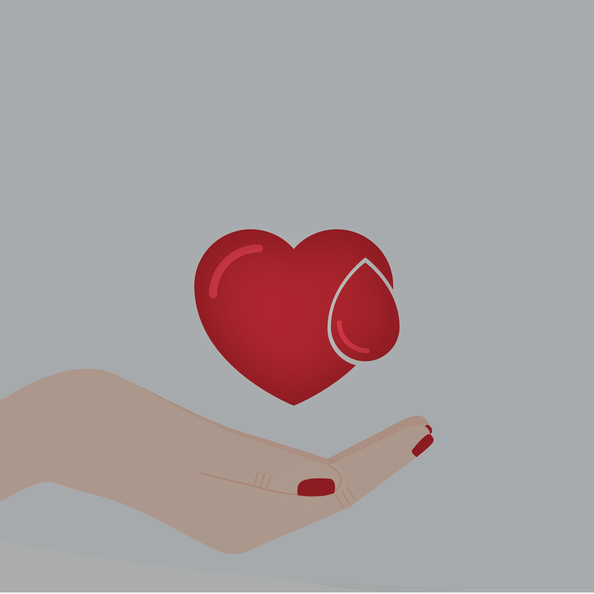
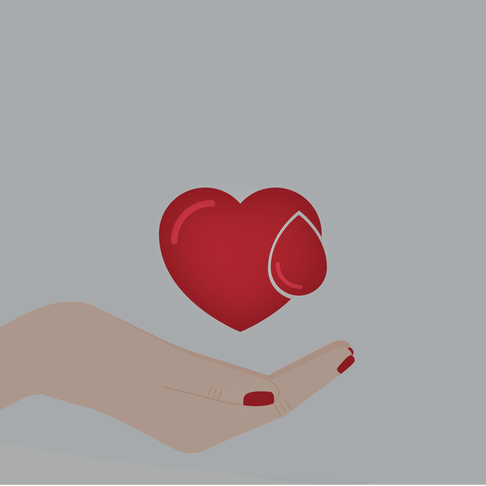

How your blood is used
One third of blood donations help treat people with cancer
Blood is surprisingly versatile. The blood you donate can be made into 22 different medical treatments.
34%
Cancer and blood diseases
19%
Other causes of Anaemia
18%
Surgical patients including open heart surgery and burn
13%
Medical problems including heart, stomach and kidney disease
10%
Orthopaedic patients including fractures & joint replacements
4%
Obstetrics including pregnant women, new mothers & young children
2%
Trauma including road accidents
Who your blood helps
Every blood donation can help save three lives
Some need it to get them through a serious event in their lives, like cancer or a difficult pregnancy.
Others have medical conditions which mean they need blood products regularly to stay alive or be healthy.
Types of donation
There are about five litres of blood in the human body
Each type of blood donation is used for different medical treatments and your blood type determines the best donation for you to make.
Blood collected straight from a donor, without anything taken out. After it's donated, we usually separate whole blood into red blood cells, plasma and platelets in our labs.
You need to be 18-70 years old, weigh 50kg or more and be fit and healthy.
Cancer, blood diseases, anaemia, heart disease, stomach disease, kidney disease, childbirth, operations, blood loss, trauma, burns.
Red cells can be stored for 42 days.
It will take 15 minutes to donate.
You can donate it in every 12 weeks.
Your blood is 55% plasma. It's the straw-coloured liquid that carries your red and white blood cells and platelets.
You can donate if you’re 18-70 years old, weigh at least 50kg and are fit and healthy.
Your plasma can be used in 18 different life-giving ways – from treating serious burns and cancer, to protecting people with brain and nerve diseases. It’s always being developed to help in new ways.
Plasma can last up to 1 year when frozen.
We collect some of your blood, keep the plasma and return the rest to you by apheresis.
It will take 45 minutes to donate.
You can donate it in every 2 weeks.
The tiny 'plates' in blood that wedge together to help clotting and reduce bleeding. Platelets are always in demand: they're vital for people with low platelet counts, like many cancer patients.
Men who are aged between 18-70, weigh 50kg or more and have given a successful plasma donation in the past 12 months.
Cancer, leukaemia (particularly during chemotherapy and bone marrow transplants), surgery, trauma, liver disease.
We collect some of your blood, keep the platelets and return the rest to you by apheresis.
It will take 45 minutes to donate.
You can donate it in every 2-4 weeks.
Types of Blood
Helps determine what kind of blood donation might be best for you
Even if you can’t give a particular kind of blood donation for health or other reasons, keep donating what you can. Your donation will still save lives!
How donation works
What happens when you give blood
It's your chance to relax, be pampered, enjoy a free snack and feel great knowing that you're saving lives.
You can’t donate on the day if you have:
- A cold or flu
- Had an upset stomach in the past week
- Been to the dentist recently
Before
The day before
- Drink up! Your blood volume goes down a little when you donate. Drink plenty of fluids the day before, especially in warm weather.
- Eat something salty, like chips or pretzels, guilt-free in the 24 hours before. Increasing your salt intake will help you restore your blood volume more rapidly after you donate.
- Write down or remember any medications you’re currently taking.
- Get your ID together. You’ll need to bring one or more documents to your appointment that.
In the 3 hours before
- For a plasma or platelet donation, have 3 large glasses of water in the 3 hours prior to your appointment. For whole blood donation, have 2 large glasses of water in the 3 hours prior, and another 2 glasses when you arrive.
- Eat something. Go for savoury and salty foods.
Welcome
- Arrive at the donor centre to a friendly welcome from our reception staff member. They'll greet you and quickly check your valid ID.
- Fill out the donor questionnaire they give you. It's completely confidential and there to protect you and the person who receives your blood.
Interview
- A trained staff member will go over your questionnaire answers with you and ask some questions to check that you're fine to donate.
- They'll give you a 'finger prick' test to check your level of haemoglobin (a protein which contains iron) and test your blood pressure.
Donate
- Sit back and relax on a comfy couch while you donate. You can read, chat with our team members or just enjoy some uninterrupted TV time.
- We'll keep a close eye on you while you're donating to make sure you're OK. Talk to a staff member if you feel uncomfortable.
- To help you stay well and make your donation go quicker, try these exercises.
- Whole blood donations take 5-15 minutes, and Plasma or platelets donations take 45 minutes.
Relax & Refresh
- After your donation's finished, rest on the couch for at least 5-10 minutes.
- When you're done with the couch, head to the refreshments area and relax for at least another 15 minutes with a complimentary cool drink and savoury snack. This is the best part!
- Have a drink on us – grab a free water or sports drink to take with you. Drink it over the next hour to stay hydrated.
After
For the first 2 hours
- Avoid smoking. It will effect more than usual.
For at least 8 hours
- Avoid alcohol. Save any celebratory drinks for later!
In the next 6 hours
- Drink at least 3 good-sized glasses of water.
- Avoid strenuous exercise like riding, jogging or going to the gym .
- Don’t stand for long periods. Avoid long queues or standing on crowded public transport.
- Try not to overheat. Stay away from hot showers, sitting or standing in direct sun, and hot drinks.
Being a blood donor
Thanks for thinking about donating blood
Most donors tell us that giving blood isn't as scary as they thought it would be.
It's easy, straightforward, rewarding and for a great cause. Who knows, maybe it will be you or someone you know who will need it one day!
It's easy, straightforward, rewarding and for a great cause. Who knows, maybe it will be you or someone you know who will need it one day!
It's easy, straightforward, rewarding and for a great cause. Who knows, maybe it will be you or someone you know who will need it one day!
 
